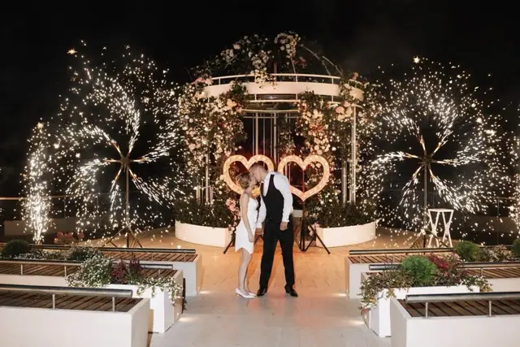
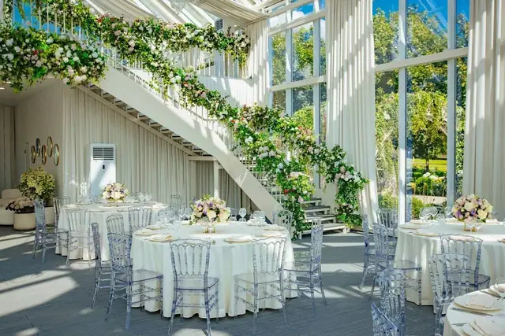
Оранжерея · Коломенское
Оранжерея «Кристалл»
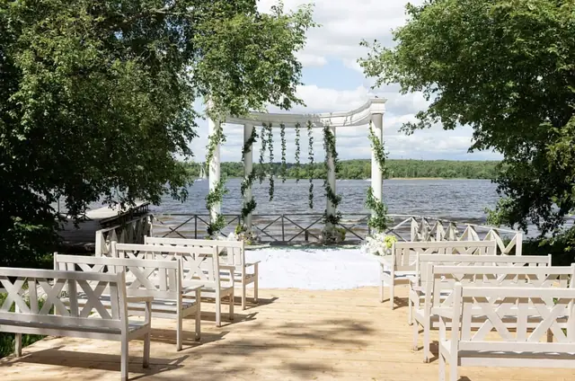
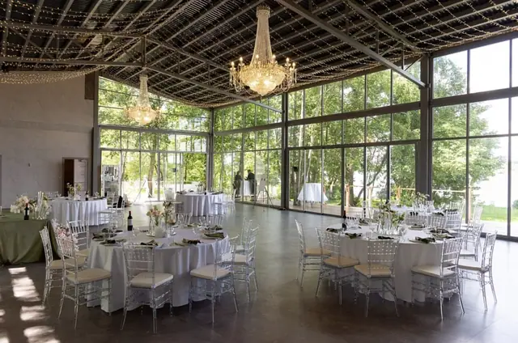
Веранда · Солнечный берег
Веранды «Мыс» и «Ривьера»
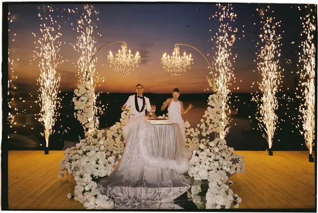
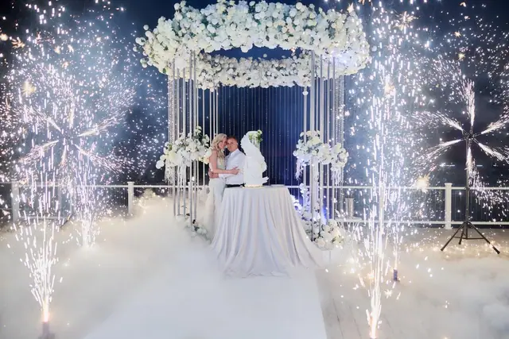
Шатёр · Яхт-клуб «Портофино»
Шатёр «Портофино»
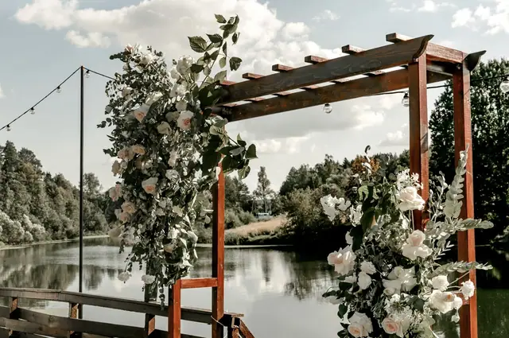
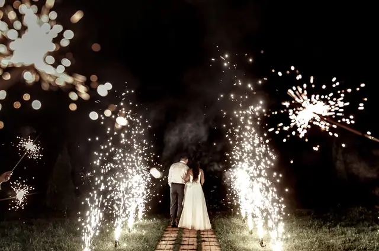
Веранда · Усадьба Валуево
Веранда «Прибрежная»
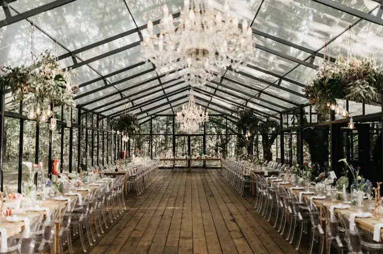
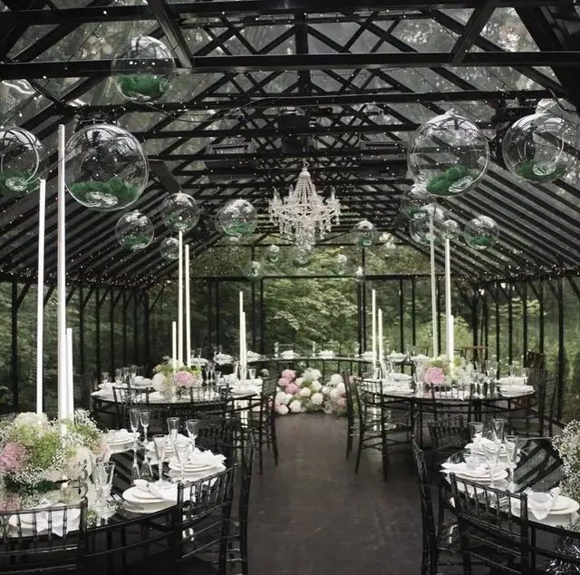
Оранжерея · Быково
Forest Dew и Due to Love
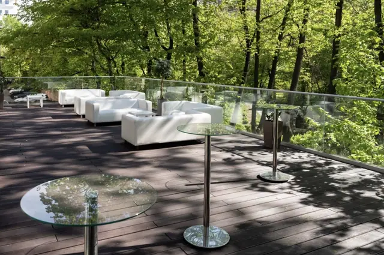
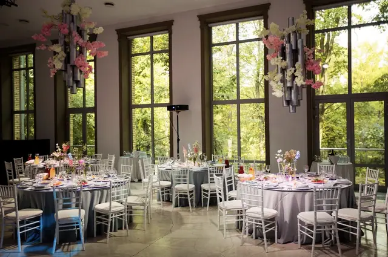
Зал · Проспект Мира
Согласие Hall
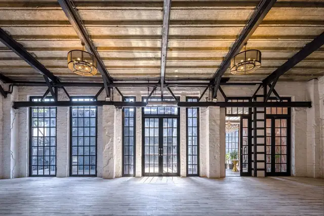
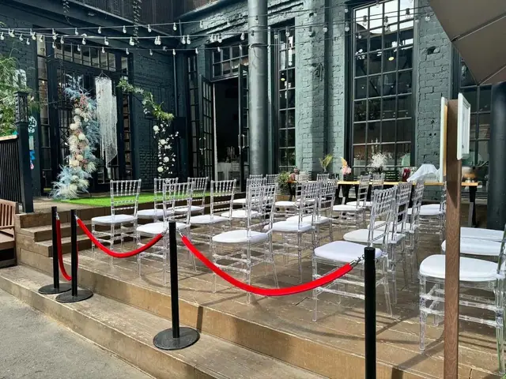
Лофт · GOELRO
Зал Hertz
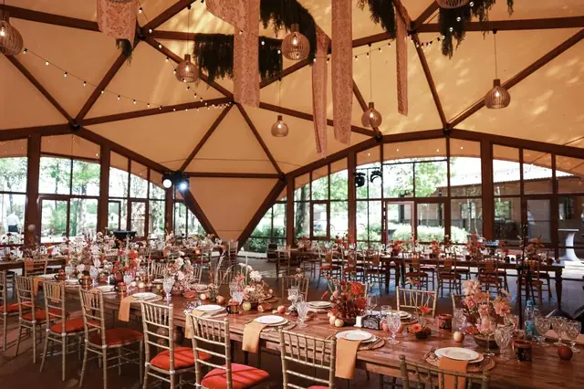
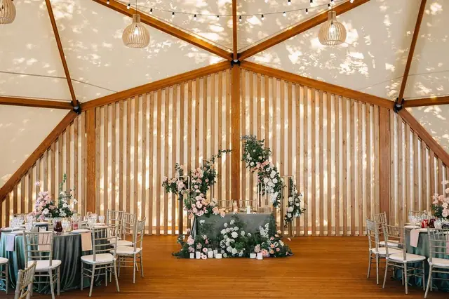
Шатёр · Орлово
Шатёр «Русская сказка»
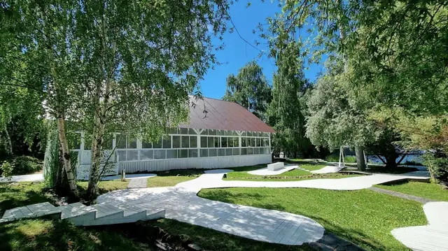
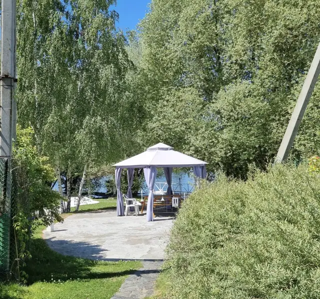
Веранда · Клуб «Водник»
Веранда «Бриз»
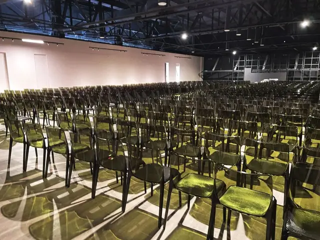
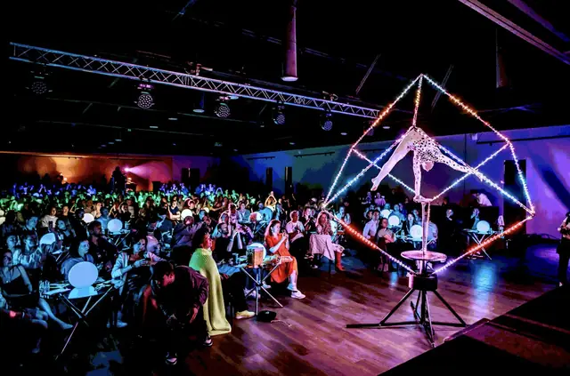
Зал · Omega Events
Pulsar
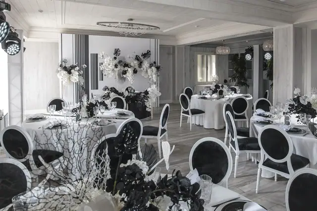
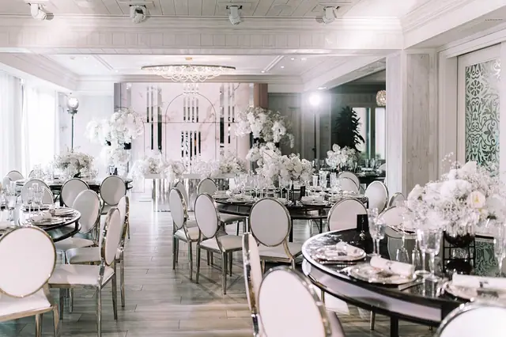
Зал · Теплица-парк
Зал «Классик»
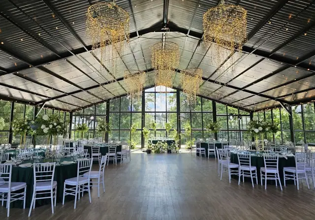
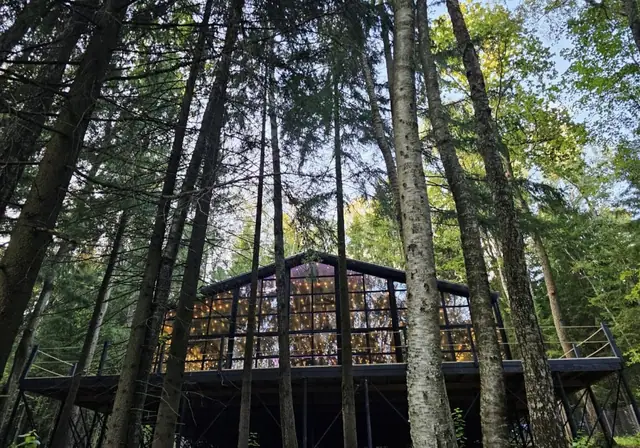
Оранжерея · Отрадное
Веранда «Дивный лес»
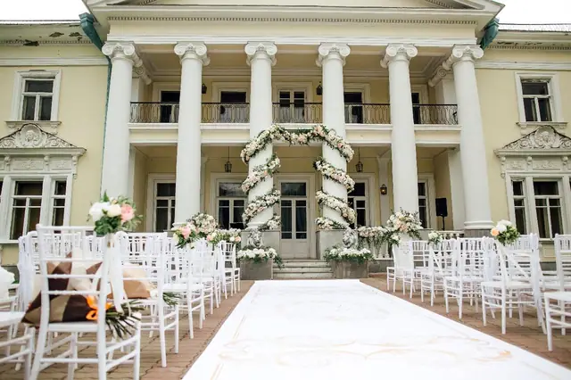
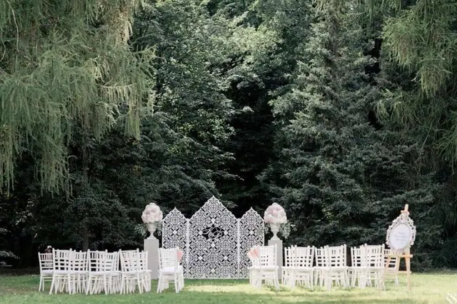
Шатёр · Усадьба Валуево
Шатёр «Дворцовая»
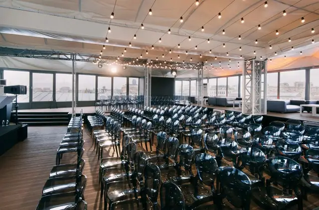
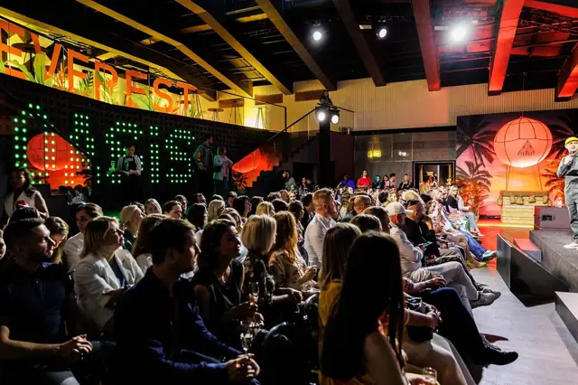
Зал · Цветной бульвар
Omega Rooftop
Цены
Сколько стоит площадка на 50 гостей
| Площадка | Гостей | Банкет, на гостя | На 50 гостей |
|---|---|---|---|
| Оранжерея «Кристалл»Коломенское | до 200 | от 7 000 ₽ | ≈ 652 000 ₽ |
| Веранды «Мыс» и «Ривьера»Солнечный берег | по запросу | от 7 700 ₽ | ≈ 548 000 ₽ |
| Шатёр «Портофино»Яхт-клуб «Портофино» | до 100 | от 7 500 ₽ | ≈ 431 000 ₽ + аренда |
| Веранда «Прибрежная»Усадьба Валуево | до 80 | от 6 000 ₽ | ≈ 422 000 ₽ |
| Forest Dew и Due to LoveБыково | до 80 | от 7 500 ₽ | ≈ 431 000 ₽ + аренда |
| Согласие HallПроспект Мира | до 200 | по меню | под запрос |
| Зал HertzGOELRO | до 400 | от 8 000 ₽ | ≈ 880 000 ₽ |
| Шатёр «Русская сказка»Орлово | до 100 | от 6 000 ₽ | ≈ 345 000 ₽ + аренда |
| Веранда «Бриз»Клуб «Водник» | до 120 | от 6 000 ₽ | ≈ 300 000 ₽ + аренда |
| PulsarOmega Events | до 500 | от 9 000 ₽ | ≈ 1 150 000 ₽ |
| Зал «Классик»Теплица-парк | до 80 | от 5 500 ₽ | ≈ 478 000 ₽ + аренда |
| Веранда «Дивный лес»Отрадное | до 150 | от 9 000 ₽ | ≈ 745 000 ₽ |
| Шатёр «Дворцовая»Усадьба Валуево | до 200 | от 6 000 ₽ | ≈ 362 000 ₽ + аренда |
| Omega RooftopЦветной бульвар | до 220 | от 9 000 ₽ | ≈ 1 150 000 ₽ |
Банкет по меню площадки + сервисный сбор + аренда и добор до депозита в самый выгодный день. Без декора, ведущего и подрядчиков — их добавьте в калькуляторе на странице площадки. Цены площадок на 2026–2027 год, на вашу дату уточним.